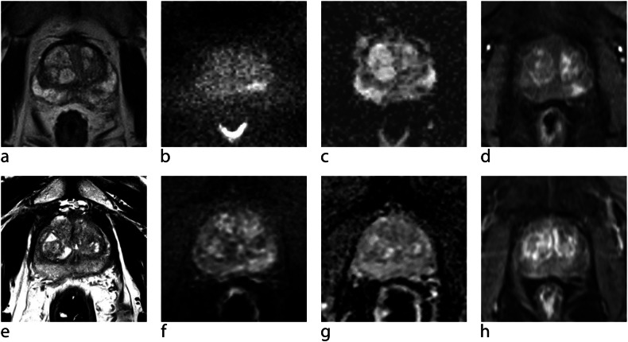
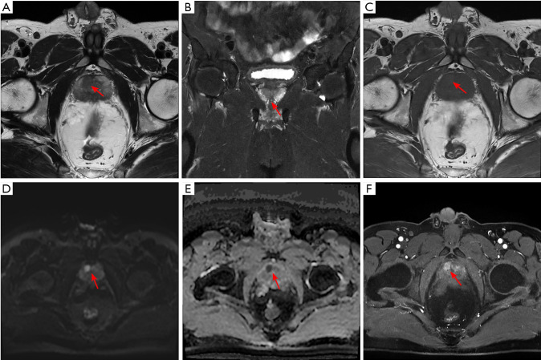
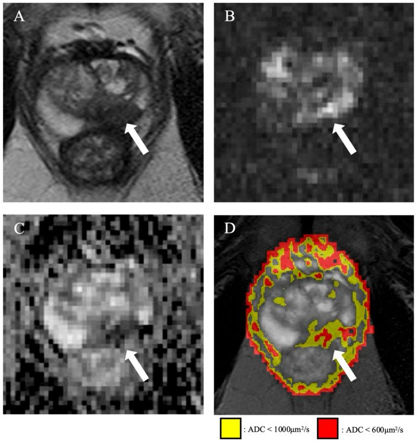

158 — Tiền liệt tuyến & PI-RADS v2.1 / Prostate PI-RADS
Tags: pattern:khoi-tien-liet-tuyen vung:tien-liet-tuyen score:PI-RADS protocol:mpMRI-tien-liet-tuyen
Mức chắc chắn (certainty): tổng hợp y văn (literature synthesis) — nhóm tự biên từ y văn mở, chưa gắn ca nguyên văn đơn lẻ.
1. Tổng quan — PZ đọc DWI, TZ đọc T2W + 1,5 cm + PSAD 0,15
- Ngoại vi (PZ, 70–75% K): ống tuyến đầy dịch → T2 sáng đều, khuếch tán tự do; ung thư (csPCa Gleason ≥ 3+4) lấp ống → hạn chế mạnh — TẠI SAO DWI (b ≥ 1.400) + ADC là chủ đạo tuyệt đối, DCE chỉ tie-breaker nâng 3→4.
- Chuyển tiếp (TZ, 20–25% K): nền BPH cũng hạn chế + ngấm giống K — TẠI SAO T2W là chủ đạo: BPH có vỏ bao xơ (organized chaos), K là mảng xám mất vỏ (erased charcoal).
- Ngưỡng: 1,5 cm tách 4/5 (đo ADC với PZ, T2W với TZ); PSAD ≥ 0,15 sinh thiết vùng xám PI-RADS 3; kỹ thuật: T2 3 mm/0 mm, DWI b ≥ 1.400, DCE ≤ 15 giây ≥ 2 phút.
2. Gamut nốt tiền liệt tuyến (Gamut)
- PZ tối ADC + sáng DWI + DCE (+): PI-RADS 4–5 — fusion biopsy + hệ thống.
- TZ mất vỏ + than chì + ≥ 1,5 cm: PI-RADS 5 — sinh thiết + giai đoạn EPE.
- PI-RADS 3 + PSAD ≥ 0,15: sinh thiết; < 0,15 theo dõi PSA.
- Đối xứng đáy + ria mép: vùng trung tâm (CZ) — đừng sinh thiết oan!
3. Bảng quy đổi PI-RADS v2.1
| Vùng + chuỗi chủ đạo | Điểm chuỗi | Chốt vào (rule-in) → PI-RADS | Chốt loại (rule-out) |
|---|---|---|---|
| PZ (DWI/ADC) 1–2 | Tuyến/chêm thẳng | 1–2: không sinh thiết | — |
| PZ DWI 3 | Vừa khu trú | DCE (−) → 3; DCE (+) → 4 | Viêm thẳng-chêm → 2 |
| PZ DWI 4/5 | Rõ rệt, < 1,5 cm / ≥ 1,5 cm-EPE | 4 / 5 (bất kể DCE) | — |
| TZ (T2W) 1–2 | Vỏ bao hoàn toàn/gần hoàn toàn | DWI ≥ 4 → 3, còn lại 1–2 | Vỏ bao = BPH |
| TZ T2W 3–5 | Mờ-không vỏ / than chì </≥ 1,5 cm | 3 / 4 / 5 theo DWI + mm | — |

PZ (ngoại vi) trái, PI-RADS 4: (a) T2-TSE, (b) DWI b1400 sáng, (c) ADC tối, (d) DCE; (e–h) sau 16 tháng tổn thương nhỏ/giảm độ rõ (PRECISE 2), mô bệnh ISUP 1 + viêm hoạt động. Nguồn: Insights into Imaging 2026 Fig. 1 (PMC13046944), CC BY 4.0.
TZ (chuyển tiếp) phải, PI-RADS 4: (A) T2 ovoid giảm tín hiệu trung bình, bờ không rõ, ~1,4 cm; (B) T2 vành; (C) T1 đồng tín hiệu; (D) DWI b1400 sáng; (E) ADC tối; (F) DCE ngấm sớm. T2WI 4 + DWI 4 → PI-RADS 4 bất kể DCE. Nguồn: Transl Androl Urol 2026 Fig. 1 (PMC13263862), CC BY-NC-ND 4.0 (giữ nguyên bản, không cắt/ghép).4. Protocol mpMRI + flowchart
- T2 đa mặt 3 mm + DWI b ≥ 1.400 + ADC + DCE ≤ 15s; V = AP×Ngang×Dài×0,52; PSAD = PSA/V.
flowchart TD
A[Nốt TLT] --> B{Vùng nào?}
B -->|PZ: DWI trước| C{DWI 3? DCE quyết 3/4; 4/5 theo mm}
B -->|TZ: T2W trước| D{Vỏ bao? Mất vỏ = than chì 4/5}
C --> E{PI-RADS 3 + PSAD?}
E -->|≥0.15| F[Sinh thiết fusion]
E -->|<0.15| G[Theo dõi PSA]
5. Cạm bẫy
- Ria mép CZ đối xứng đáy tưởng PI-RADS 4/5 — coronal + đối xứng là bình thường.
- BPH thò ra PZ đọc nhầm 4 — T2W thấy vỏ bao + liên tục TZ → PI-RADS 2.
- Máu sau sinh thiết giả K — T1W máu sáng + hemorrhage exclusion (ổ tối = u!) + chờ 6 tuần.
- AFMS trước tối T2/ADC nhưng không sáng DWI/không ngấm — K sừng trước thì ngược lại.
6. Tự lượng giá — Blind Quiz
Ca 1 — PZ phải tối ADC + sáng b1600 12 mm + DCE (+): PI-RADS mấy? Sinh thiết không? (Bảng mục 3.)
Bấm để hiện đáp án
- PI-RADS 4 (DWI 4, < 1,5 cm) — fusion + hệ thống (bất kể DCE).
Ca 2 — PI-RADS 3 + PSA 6, V 50 mL: PSAD bao nhiêu? Sinh thiết hay theo dõi? (Bảng mục 3 + mục 4.)
Bấm để hiện đáp án
- PSAD = 6/50 = 0,12 (< 0,15): theo dõi PSA (≥ 0,15 mới sinh thiết).
Ca 3 — Đáy đối xứng ria mép tối ADC 2 bên: PI-RADS mấy? (Bảng mục 5.)
Bấm để hiện đáp án
- Bình thường (CZ): không sinh thiết — bẫy số 1 PI-RADS!
Ca 4 — PZ trái T2 tối + b-high sáng + ADC tối; có bản đồ hai màu theo ADC:

- Câu hỏi: Vì sao vùng đỏ (ADC < 600 µm²/s) đáng ngờ ung thư có ý nghĩa lâm sàng (csPCa) hơn vùng vàng (ADC < 1000 µm²/s)? PI-RADS mấy?
Bấm để hiện đáp án
- Dấu hiệu: (A) T2 tối, (B) DWI bậc cao sáng, (C) ADC tối, (D) bản đồ hai màu ở PZ trái — vàng = ADC < 1000 µm²/s, đỏ = ADC < 600 µm²/s.
- Chẩn đoán: PI-RADS 4–5 (DWI/ADC chủ đạo ở PZ) — vì ADC càng thấp thì mật độ tế bào càng cao → càng đáng ngờ csPCa; ngưỡng hành động là ADC < 600 µm²/s (đỏ).
- Nguồn: Cancers 2026 Fig. 1 (PMC13257200), CC BY 4.0.
Bài liên quan chéo
- 100 – Tổng quan Bụng
- 3055 – Áp-xe tuyến tiền liệt (kẻ bắt chước PI-RADS 4–5: ổ dịch ADC rất thấp + vỏ ngấm thuốc; sốt/48 giờ)
- 150 – Bosniak (logic RADS)
- 155 – Thượng thận (washout)
Không dùng để chẩn đoán độc lập khi chưa có người hướng dẫn.